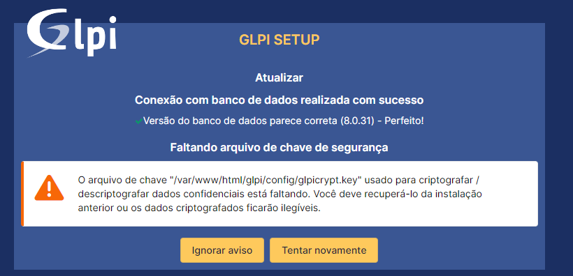

Guia para Subir o GLPI no Google Cloud Platform (GCP) com Kubernetes
Avisos Importantes Antes de Começar
-
Faça backup dos arquivos importantes do GLPI:
- Baixe a versão mais recente do GLPI separadamente.
- Copie as subpastas da pasta "files" do seu GLPI atual para a nova versão (HTML, TXT, XLSX, PNG, etc.), garantindo que todos os seus documentos estejam disponíveis na nova instalação.
-
Realize o backup do banco de dados:
-
Faça uma cópia do seu banco de dados antes de iniciar o processo com o seguinte comando:
mysqldump -u root -p glpi > backup_glpi.sql
-
Passo a Passo para Containerizar e Subir o GLPI no GCP
1. Containerizar o GLPI
Passo 1: Instalar Docker no Debian
Certifique-se de que o Docker esteja instalado na sua máquina Debian onde o GLPI está rodando:
sudo apt update
sudo apt install docker.io
Passo 2: Criar o Dockerfile
No diretório onde está o GLPI, crie um arquivo chamado Dockerfile com o seguinte conteúdo:
FROM debian:latest
# Instalar dependências necessárias
RUN apt-get update && apt-get install -y \
apache2 \
libapache2-mod-php \
php-cli php-curl php-gd php-mbstring php-mysql php-xml php-zip php-intl php-ldap php-bz2 \
wget unzip \
&& apt-get clean && rm -rf /var/lib/apt/lists/*
# Copiar arquivos do GLPI para o container
COPY . /var/www/html/glpi/
# Configurar permissões
RUN chown -R www-data:www-data /var/www/html/glpi && \
chmod -R 755 /var/www/html/glpi
# Configurar Apache
RUN touch /etc/apache2/conf-available/glpi.conf
RUN a2enmod rewrite
RUN echo '<VirtualHost *:80>\n\
DocumentRoot /var/www/html/glpi/public\n\
<Directory /var/www/html/glpi/public>\n\
AllowOverride All\n\
RewriteEngine On\n\
RewriteCond %{REQUEST_FILENAME} !-f\n\
RewriteRule ^(.*)$ index.php [QSA,L]\n\
</Directory>\n\
</VirtualHost>' > /etc/apache2/conf-available/glpi.conf
RUN a2enconf glpi.conf
RUN echo "ServerName localhost" >> /etc/apache2/apache2.conf
# Expor a porta 80
EXPOSE 80
# Inicializar o Apache
CMD ["apache2ctl", "-D", "FOREGROUND"]
Passo 3: Construir a Imagem Docker
No diretório glpi criado, copie o arquivo Dockerfile para essa pasta e execute o seguinte comando para construir a imagem:
sudo docker build -t <nome_para_sua_imagem> .
#No nosso exemplo considerer <nome_para_sua_imagem> como "glpi-container" nos demais passos desse arquivo.
Passo 4: Testar o Container Localmente
Execute o container localmente para garantir que está funcionando corretamente:
sudo docker run -d -p 8080:80 glpi-container
2. Subir o GLPI no Google Cloud Platform (GCP)
Aqui utilizaremos o Google Kubernetes Engine (GKE) na região southamerica-east1.
Passo 1: Push da Imagem para o Artifact Registry
Primeiro, faça o push da sua imagem Docker para o Artifact Registry:
-
Autentique no GCP:
# Atualizar os pacotes sudo apt-get update && sudo apt-get install -y apt-transport-https ca-certificates gnupg # Adicionar a chave do repositório do Google Cloud echo "deb [signed-by=/usr/share/keyrings/cloud.google.gpg] https://packages.cloud.google.com/apt cloud-sdk main" | sudo tee -a /etc/apt/sources.list.d/google-cloud-sdk.list curl https://packages.cloud.google.com/apt/doc/apt-key.gpg | sudo apt-key --keyring /usr/share/keyrings/cloud.google.gpg add - # Atualizar os pacotes e instalar o Google Cloud SDK sudo apt-get update && sudo apt-get install -y docker.io google-cloud-sdk -
Definindo projeto:
gcloud config set project <project_id> -
Tagueie a imagem:
docker tag glpi-container southamerica-east1-docker.pkg.dev/<project_id>/<repositorio>/<nome_imagem> -
Envie a imagem:
docker push southamerica-east1-docker.pkg.dev/<project_id>/<repositorio>/<nome_imagem>
Passo 2: Criar o Cluster GKE
Crie um cluster no Google Kubernetes Engine:
gcloud container clusters create glpi-cluster \
--zone southamerica-east1-a
Passo 3: Configurar o Deployment no Kubernetes
Crie um arquivo glpi-deployment.yaml com o seguinte conteúdo:
apiVersion: apps/v1
kind: Deployment
metadata:
name: glpi-deployment
spec:
replicas: 1
selector:
matchLabels:
app: glpi
template:
metadata:
labels:
app: glpi
spec:
containers:
- name: glpi
image: southamerica-east1-docker.pkg.dev/<project_id>/<repositorio>/glpi-container
ports:
- containerPort: 80
Aplique o deployment no cluster:
kubectl apply -f glpi-deployment.yaml
Passo 4: Expor o Serviço
Crie um arquivo glpi-service.yaml para expor o serviço via LoadBalancer:
apiVersion: v1
kind: Service
metadata:
name: glpi-service
spec:
type: LoadBalancer
selector:
app: glpi
ports:
- protocol: TCP
port: 80
targetPort: 80
Aplique o serviço:
kubectl apply -f glpi-service.yaml
Verificando se o serviço está rodando:
kubectl get services
3. Configurar o Banco de Dados no GCP
Passo 1: Criar uma Instância SQL no GCP
- Crie um bucket no GCP e faça o upload do arquivo
backup_glpi.sql(backup do seu banco de dados do glpi atual).
- No GCP, crie uma instância SQL utilizando MySQL.

- Crie um banco de dados chamado
glpi.
- No console SQL da Instância criada, crie um usuário e uma senha para o GLPI conectar ao banco de dados.

Passo 2: Importar o Backup do Banco de Dados
- No Console SQL, clique em "Importar" na sua instância.
- Aponte para o bucket onde o arquivo SQL foi enviado.
- Defina o formato como SQL e selecione o banco de dados
glpicomo destino.

Passo 3: Conectar o GLPI ao Banco de Dados
- No painel SQL, vá em "Conexões" e habilite o "IP público" (Nesse nosso caso de teste habilitamos o 0.0.0.0/0, em caso de produção, é importante verificar cada cenário para entender melhor a necessidade)
- Adicione o IP do seu cluster GKE nas "Redes Autorizadas".

Passo 4: Configurar o GLPI
- Acesse o GLPI via navegador e selecione a opção de Atualizar (se for uma migração).
-1.png)
- Insira as credenciais do banco de dados e selecione o banco de dados glpi, criado.

Finalizando a Instalação
- Chave
glpicrypt.key: Faça o upload dessa chave em um bucket no GCP e faça o download no pod ativo do GLPI.
 - Para copiar essa chave ao seu pod do cluster, você pode se conectar ao seu terminal seguindo esses comandos:
- verifique o nome do pod com o comando: kubectl get pods
- Realizar acesso remoto no terminal do pod: kubectl exec -it <pod_name> -- /bin/bash
- Com wget realize o download do arquivo glpicrypt.key ao definir o bucket como público e copiar o link de download do arquivo.
- Recorte o arquivo baixado na pasta: /var/www/html/glpi/config
- Remover
install.php: Acesse o container e remova o arquivoinstall.phppara segurança.
Parabéns! Seu GLPI está configurado e rodando no GCP com sucesso!